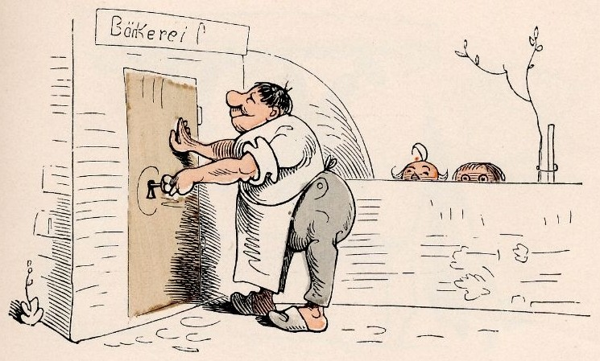

Eine Geschäftsgeschichte
in vier Streichen
„Mancher gibt sich viele Müh’
mit Prozessen — spät und früh.“
frei nach Wilhelm Busch, 1865
Ich bin Mark Finnern — dreißig Jahre Enterprise-Software, davon zwei Jahrzehnte im Silicon Valley, Mitgründer des SAP-Mentors-Programms, heute wieder daheim in Schramberg. Ich spreche beide Sprachen: die Ihrer Prozesse, gelernt in dreißig Jahren zwischen Buchhaltung, Fertigung und SAP — und die der KI, die diese Prozesse heute automatisiert. Gebaut wird bei Ihnen im Haus: keine Strategiepapiere, sondern Prototypen, die noch im Termin entstehen.
Warum Wilhelm Busch? Weil seine Geschichten das tun, was gute Automatisierung auch tut: Sie bringen eine festgefahrene Ordnung in Bewegung — und am Ende hat man etwas gelernt. Und weil wir ihn nicht vergessen wollen: Sein „Max und Moritz“ Werk gibt’s im Projekt Gutenberg.
Erster Streich
Vom zähen Prozess zum laufenden System
„Was du dreimal tippst am Tag,
schafft der Workflow ohne Klag.“
Bestellungen, die als PDF ankommen und von Hand abgetippt werden. Daten, die zwischen SAP, dem alten Warenwirtschaftssystem und Excel hin- und herwandern. Genau dort fange ich an: Ich setze mich neben Ihre Leute, verstehe den Ablauf, wie er wirklich läuft — nicht, wie er im Handbuch steht — und baue die Automatisierung direkt bei Ihnen im Haus. Aus unstrukturierten Papierbergen werden strukturierte Daten, aus Handarbeit ein Ablauf, der von selbst läuft. Das Werkzeug — n8n, Python oder was das Problem verlangt — richtet sich nach Ihrem Betrieb, nie umgekehrt. Auch die Systeme, von denen der Hersteller längst nichts mehr wissen will, nehme ich mit.
Ein Beispiel aus der Praxis: Bei einem Werbetechnik-Betrieb in der Region laufen Großkunden-Bestellungen heute automatisch vom Kundenportal bis ins hauseigene ERP — inklusive Positionsdaten, ohne Abtippen. Selbst gehostet, die Daten bleiben im Haus.
Dieses war der erste Streich,
doch der zweite folgt sogleich.
Zweiter Streich
KI-Impact-Workshops
„Also lautet ein Beschluß,
daß der Mensch was lernen muß.“
Wilhelm Busch, Vierter Streich
Lehrer Lämpel hätte seine Freude: In meinen Workshops wird nicht über KI geredet, sondern mit ihr gearbeitet. Sie bringen ein echtes Problem aus Ihrem Betrieb mit — wir lösen es gemeinsam, und Ihr Team lernt dabei, das nächste Problem selbst zu lösen. Das ist der eigentliche Ertrag: Fähigkeit im Haus, nicht Abhängigkeit vom Berater.
Geübt habe ich das oft: In der KI-Impact-Community, die ich 2024 gegründet habe, haben über 500 Menschen aus der Region in mehr als einem Dutzend Veranstaltungen KI praktisch ausprobiert. Motto: Nit schwätza — macha.
Festpreis statt Tagessatz-Lotterie, halber oder ganzer Tag, bei Ihnen vor Ort im Schwarzwald oder remote. Am Ende steht ein funktionierender Prototyp — kein Foliensatz.
Dieses war der zweite Streich,
doch der dritte folgt sogleich.
Dritter Streich
Funkenflug — der Branchen-Newsletter
„Rums!! — Da geht die Pfeife los
mit Getöse, schrecklich groß.“
Wilhelm Busch, Vierter Streich
Funkenflug ist ein monatlicher KI-Newsletter — aber nicht irgendeiner, sondern Ihrer: zugeschnitten auf Ihre Branche, Ihre Werkzeuge und das, was sich in Ihrem Haus gerade bewegt. Ihre Belegschaft bekommt jeden Monat die drei, vier Entwicklungen, die für sie wirklich zählen — verständlich eingeordnet, mit konkreten Anwendungsideen.
So bleibt der Funke nach dem ersten Workshop nicht nur erhalten — er fliegt weiter, Monat für Monat, durch den ganzen Betrieb.
Dieses war der dritte Streich,
doch der vierte folgt sogleich.
Vierter Streich
Vertrauliche KI
„Was geheim ist, bleibt im Haus —
und kein Bit schleicht heimlich raus.“

Steuerberater, Anwälte, Ärzte, Personalabteilungen: Es gibt Daten, die gehören in keine amerikanische Cloud. Für diese Fälle baue ich KI-Lösungen auf vertraulicher Infrastruktur — lokale Modelle oder Confidential Computing, bei dem selbst der Rechenzentrumsbetreiber Ihre Daten nicht lesen kann. DSGVO nicht als Fußnote, sondern als Architekturprinzip.
Dieses war der vierte Streich,
doch der fünfte folgt sogleich —
vielleicht bei Ihnen im Betrieb,
denn so ein Besuch wär mir lieb!
Die Moral von der Geschicht’
„Handarbeit am falschen Fleck
ist kein guter Lebenszweck.“
- Prototypen statt Papier.
„Nicht ein Werk, das keiner liest —
sondern eins, das läuft und fließt.“ - Lernen schlägt Sparen.
„Wer mit KI nur Kosten drückt,
hat das Beste nicht erblickt:
Reicher wird, wen sie belehrt —
Wissen ist, was sich vermehrt.“ - Ihre Daten, Ihr Haus.
„Und der Daten stiller Schatz
hat im eignen Haus den Platz.“ - Der Mensch entscheidet.
„Die Maschine tippt und schreibt,
doch das letzte Wort verbleibt
bei dem Menschen — so allein
soll es jetzt und immer sein.“
Epilog
Wenn Sie bis hierhin gelesen haben, gehören Sie vermutlich zu den Menschen, die einen zweiten Blick riskieren, bevor sie urteilen. Gute Voraussetzung. Der einfachste nächste Schritt: ein Gespräch von dreißig Minuten. Sie erzählen mir Ihren zähesten Prozess — ich sage Ihnen ehrlich, ob und wie er sich automatisieren lässt. Wenn nicht, sage ich Ihnen das auch.
mark@finnern.com · +49 170 668 8388
Gespräch anfragen
Außerdem: KI-Impact — unsere regionale KI-Community im Schwarzwald.
Mitmachen kostet nichts außer Neugier.
Und als freier Mitarbeiter des Schwarzwälder Boten schreibe ich über die Wirtschaft der Region — zuletzt in meiner China-Serie: wie der Schwarzwald auf China blickt.